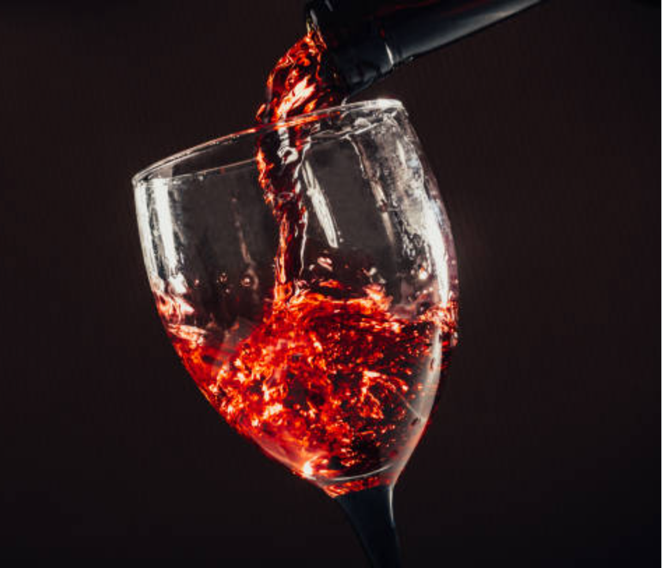

(Written by Claude 3.0 Opus)
오랜 결혼생활 동안 아내가 술을 마시는 모습은 본 적이 없었다.  나는 술을 좋아하지만, 아내는 술과 거리가 멀어 보였기 때문이다. 각자 술에 대한 취향이 달랐지만, 그동안 서로 존중하며 지내왔다. 그런데 오늘, 아내가 술잔을 들었다. 한 잔을 마신 후 맛있다며 또 한 잔을 마셨다. 처음 보는 광경에 나는 놀랍기도 하고 반가운 마음도 들었다. 이제 아내와 함께 술자리를 가질 수 있겠구나 하는 기대감이 생겼다. 하지만 동시에 걱정되는 마음도 있었다. 혹시 아내가 술을 즐기게 될까봐, 나처럼 술을 좋아하게 될까봐 말이다. 술은 즐기는 사람에게는 좋은 친구 같지만, 지나치면 독이 될 수도 있다. 나는 그 점을 잘 알고 있었다. 그래도 이내 그런 생각을 접어두었다. 아내는 절제력이 있는 사람이다. 한두 잔 마신다고 해서 술의 노예가 되지는 않을 것이다. 그저 기분 전환으로 조금 마신 것뿐이라고 생각했다. 사실 결혼 초기에는 아내와 함께 술자리를 가져보고 싶다는 생각을 한 적이 있었다. 그때는 아내가 술을 즐기지 않아 포기했었는데, 이제야 그 기회가 생긴 것 같아 기뻤다. 앞으로 종종 둘이 술잔을 기울이며 대화를 나눠볼 수 있을 것 같았다. 하지만 한편으로는 술이 우리 사이를 멀어지게 할까봐 걱정이 되기도 했다. 술은 가까이 하기에 따라서는 인간관계에 해가 될 수도 있으니까. 그래도 우리는 서로 사랑하고 신뢰하는 사이다. 술 때문에 우리 사이가 벌어지는 일은 없을 것이라고 믿었다. 나는 술 마시는 걸 좋아하지만, 아내의 기호를 존중해왔다. 이제 아내도 가끔 술을 즐기게 된 것 같아 기쁘다. 앞으로는 두 사람이 적당히 술을 즐기면서 좋은 추억을 쌓아가면 좋겠다. 다만 우리 모두 술을 절제할 줄 아는 어른이 되어야 할 것이다. 술은 인생의 양념이지 주식이 될 순 없다. 기분 전환으로 즐기되 지나치지 않도록 서로 주의를 기울이면 좋겠다. 술은 마시는 사람의 인생을 바꿀 수 있는 힘이 있다. 좋은 방향이든 나쁜 방향이든 말이다. 우리는 술과 적당한 거리를 유지하며, 술의 순기능은 취하되 역기능은 경계해야 한다. 오늘 아내가 술을 마시는 모습을 보니 문득 세월의 흐름을 느낀다. 결혼할 때만 해도 어린 신부였던 아내가 이제는 어엿한 아내이자 엄마가 되었다. 세월이 흘러도 변하지 않는 것이 있다면, 그건 바로 우리의 사랑일 것이다. 앞으로 술자리를 종종 가지면서 좋은 추억을 쌓아가고 싶다. 서로의 속마음을 터놓고 대화하는 시간. 오랜만에 둘만의 시간을 갖는 시간. 그런 시간들이 쌓이면 우리는 더 깊은 사랑으로 발전해 갈 수 있을 것이다. 오늘 아내의 새로운 모습을 발견한 것은 우리 부부에게 의미 있는 일이다. 앞으로도 서로의 모습에 귀 기울이고 알아가는 노력을 하다 보면 더욱 단단한 부부가 될 수 있을 것이다. 술 한 잔을 함께 하는 것은 작은 일이지만, 그 속에서 서로를 이해하고 존중하는 태도를 배울 수 있다. 그런 의미에서 오늘은 뜻깊은 날이 아닐까 싶다.
Go Back to Brunch Page